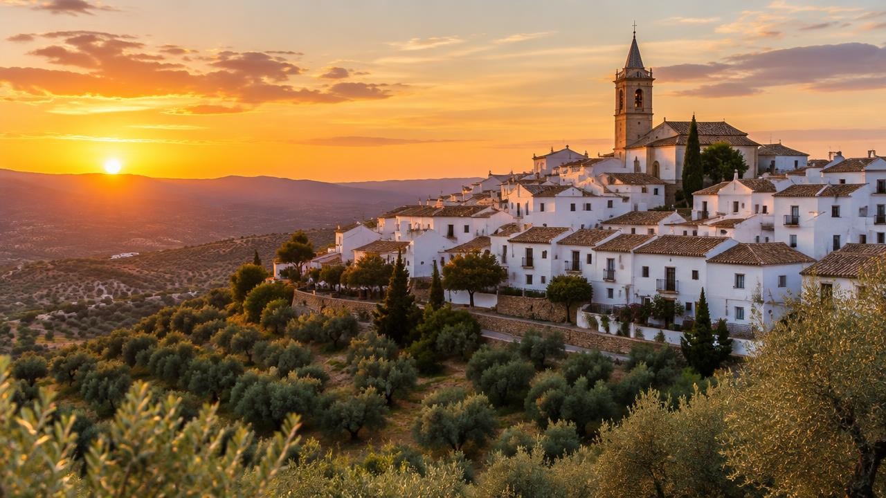

Jaén · Comarca de El Condado
Castellar,
donde el olivo guarda la historia
Un pueblo blanco con raíces íberas, palacio renacentista y el mejor aceite del mundo.
Empieza la ruta →~3.300habitantes
s. IV a.C.santuario íbero
s. XVIPalacio Ducal
∞olivos
Cifras aproximadas: compruébalas en el INE y en la web del Ayuntamiento.
Bienvenida
¿Por qué merece una visita?
Castellar está en lo alto de un cerro, rodeado por un mar de olivos. Sus calles blancas suben hasta el casco antiguo. Allí se mezclan dos épocas: el pasado íbero y el Renacimiento.
- Uno de los santuarios íberos más importantes de la península.
- Un palacio renacentista convertido en museo.
- Aceite de oliva virgen extra y cocina tradicional jiennense.
- Fiestas populares que se viven en la calle.
Explora